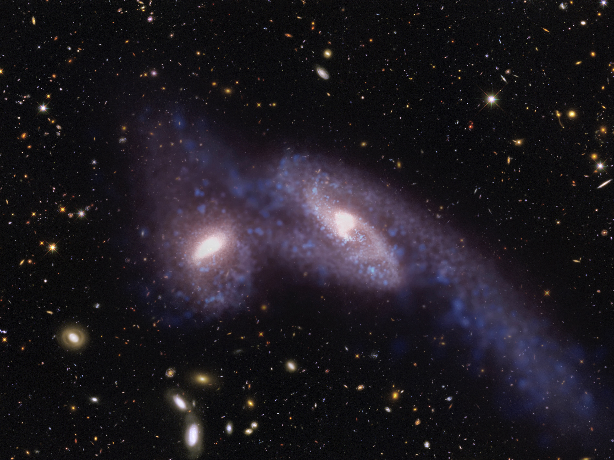

Science Digest
Mergers of Supermassive Black Holes
The Milky Way, our home galaxy, is on a collision course for the Andromeda galaxy. No need to worry, that event won’t happen for another 5 billion years! However, galaxies merge all over the universe, all of the time, occurring whenever two galaxies drift too close to each other and subsequently pulled together by the force of gravity. The following image shows two galaxies undergoing a merger, generated from a "universe-in-a-box" computer simulation.
What cannot be seen from images such as this are supermassive black holes. In the center of nearly every galaxy lurks a supermassive black hole that can often be millions or even billions of times the mass of the Sun! Despite their mass, black holes are the most compact objects possible, and are therefore very small and hard to resolve with telescopes.
During a merging of two galaxies, their central supermassive black holes approach and spiraling in towards each other, engaging in a cosmic dance. Due to the sheer magnitude of the event, the black holes will drag spacetime itself with them, emitting a music called gravitational waves. These gravitational waves travel through space for millions of light-years before reaching our detectors at Earth.
Just like how we use our two ears to localize the source of a sound, multiple gravitational wave detectors can provide us with a direction from which the music came from. But these detectors alone are not enough to find out exactly where it came from. While our ears give us the general direction of the sound, it’s not until we look over with our eyes that we can identify the source. In the same way, gravitational wave detectors provide us with a broad region in the sky where it came from, and it is not until we view the region with telescopes that we can find its origin and study the environment of the supermassive black holes. The issue is that we are not sure what to look for.
My research provides a method by which we could use the shape and structure of galaxies to determine the presence of supermassive black holes. To find this out, I used computer simulations of tens of thousands of galaxies to understand what merging galaxies look like when their supermassive black holes enter their dramatic dance. This research could help provide astronomers with a way to correctly identify the galaxy which contains the black holes amidst the millions upon millions of galaxies in the sky. By understanding more about these supermassive black hole mergers and their effects on galaxies, we can gain a better understanding of the mysterious, yet beautiful universe we live in.